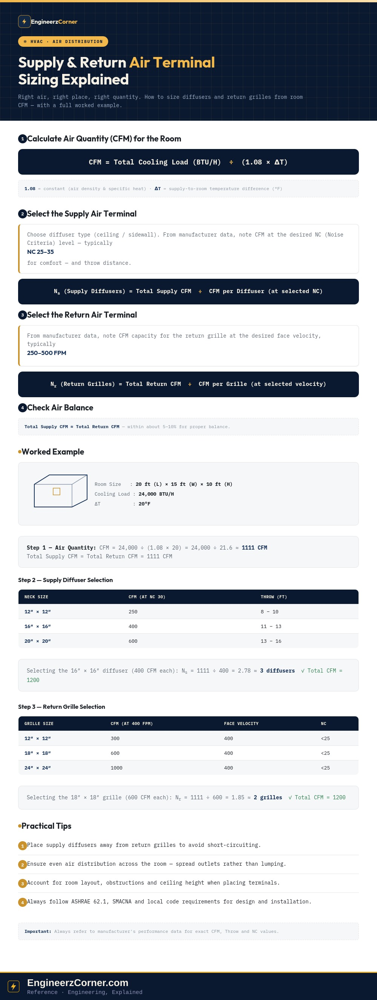

Proper selection and quantity of Supply Air Terminals (diffusers) and Return Air Terminals (grilles) is what actually delivers good air distribution, comfort and efficiency in a room — the load calculation and duct sizing upstream of it don't matter much if the air doesn't leave the diffuser at the right rate, throw and noise level. The method is the same four steps every time: get the room's air quantity, pick a diffuser that delivers it at an acceptable noise level, pick a return grille that pulls it back at an acceptable face velocity, and check that supply and return balance.

Room CFM, supply diffuser selection, return grille selection, air balance, and a worked example with a typical layout.
1. Calculate air quantity (CFM) for the room
The CFM required for a room is usually already available from the load calculation, so this step is normally a lookup rather than new work — but it's worth keeping the formula on hand, since it also lets you sanity-check a supplied CFM number against the room's stated cooling load and design ΔT.
2. Select the supply air terminal
Start by choosing the diffuser type — ceiling or sidewall — based on the ceiling layout and room geometry. From the manufacturer's performance data, pull two numbers for each candidate size: CFM at the desired NC (Noise Criteria) level, and throw distance. NC 25–35 is the typical comfort range; going lower usually means a larger, more expensive diffuser for the same CFM.
Round the result up to a whole number of diffusers — rounding down under-delivers air to the room, which is the more common and more noticeable mistake.
3. Select the return air terminal
Return grilles are sized differently — instead of a noise-level lookup, use the manufacturer's CFM capacity at a chosen face velocity, typically in the 250–500 FPM range. Too high a face velocity pulls noise and draft complaints back into the return path; too low oversizes the grille for no real benefit.
4. Check air balance
Total supply CFM should come out approximately equal to total return CFM — within about 5–10% is the usual tolerance for proper balance. A room that's persistently over-supplied or over-returned relative to its neighbors ends up pressurized or depressurized against the corridor, which shows up as doors that won't close quietly, drafts under doors, or odors migrating between spaces.
5. Worked example
Room: 20 ft (L) × 15 ft (W) × 10 ft (H), cooling load 24,000 BTU/H, ΔT = 20°F.
Step 1 — Air quantity
Step 2 — Supply diffuser selection
| Neck Size | CFM (at NC 30) | Throw (ft) |
|---|---|---|
| 12″ × 12″ | 250 | 8 – 10 |
| 16″ × 16″ | 400 | 11 – 13 |
| 20″ × 20″ | 600 | 13 – 16 |
Selecting the 16″ × 16″ ceiling 4-way diffuser (400 CFM each):
Step 3 — Return grille selection
| Grille Size | CFM (at 400 FPM) | Face Velocity | NC |
|---|---|---|---|
| 12″ × 12″ | 300 | 400 | <25 |
| 18″ × 18″ | 600 | 400 | <25 |
| 24″ × 24″ | 1000 | 400 | <25 |
Selecting the 18″ × 18″ return grille (600 CFM each):
Step 4 — Typical layout
With 3 supply diffusers spread across the room and 2 return grilles placed away from them, supply and return both land at 1200 CFM — inside balance, and with 3 diffusers instead of a lumped single outlet, the room gets more even air distribution and less risk of short-circuiting air straight from supply to return.
Practical tips
- 1Place supply diffusers away from return grilles to avoid short-circuiting — air taking the shortest path back out without actually conditioning the occupied zone.
- 2Ensure even air distribution across the room; a single oversized diffuser rarely performs like several smaller ones spread through the space.
- 3Account for room layout, obstructions (beams, light fixtures, sprinklers) and ceiling height when placing terminals.
- 4Follow ASHRAE 62.1, SMACNA and local code requirements for design and installation, and always refer to the manufacturer's performance data for exact CFM, throw and NC values rather than assuming.
Key takeaways
- ✓Room supply CFM comes from the cooling load: CFM = BTU/H ÷ (1.08 × ΔT).
- ✓Supply diffuser count = Total Supply CFM ÷ CFM per diffuser at the selected NC level (typically NC 25–35).
- ✓Return grille count = Total Return CFM ÷ CFM per grille at the selected face velocity (typically 250–500 FPM).
- ✓Round terminal counts up, not down — under-delivering air is the more common and more noticeable failure.
- ✓Keep supply and return CFM within about 5–10% of each other, and always verify final selections against manufacturer data and ASHRAE/SMACNA guidance.